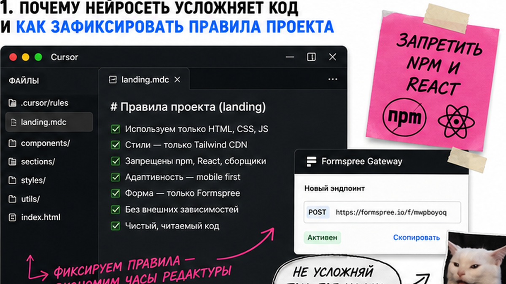
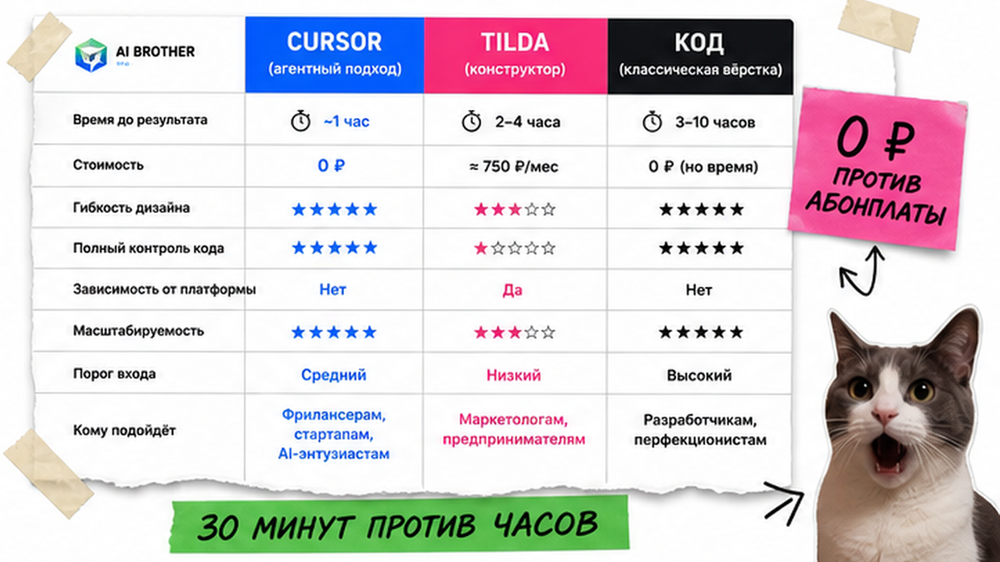
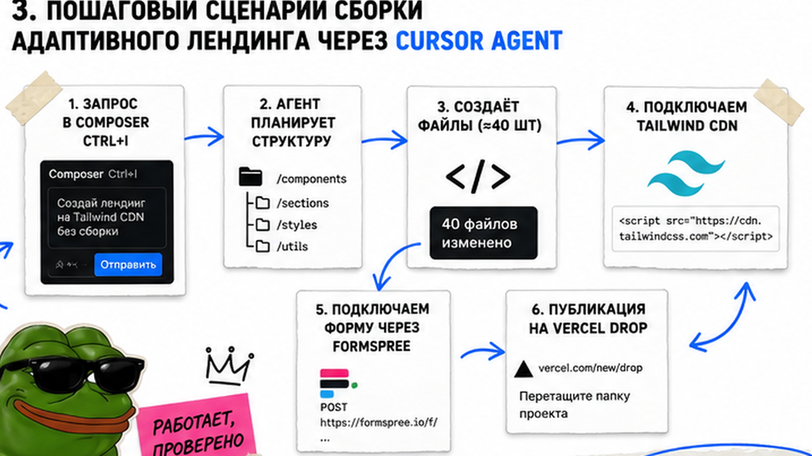

Создание своего сайта пугает новичков кодом, окном консоли и риском слить бюджет. Если доверить задачу ИИ без рамок, редактор создаст сложный проект с десятками файлов, который не запустится без сервера. В этой инструкции вы узнаете, как управлять Cursor AI простыми запросами на русском языке и за 1–2 часа собрать адаптивный продающий лендинг в одном файле index.html, подключить бесплатный прием заявок через Formspree и опубликовать сайт на Vercel Drop без терминала и npm.
Суть метода: мы превращаем ИИ-редактор кода в удобный визуальный конструктор с помощью одного файла проектных правил. Сайт создается внутри документа index.html со стилями Tailwind CDN, форма отправляет лиды через шлюз Formspree, а публикация с HTTPS занимает 15 секунд через Vercel Drop без покупки серверов. В итоге вы получите готовый инструмент привлечения клиентов.
Предпринимательница Анна решила запустить лендинг для записи на мастер-класс. Она установила Cursor AI и написала в чат: "Сделай красивый сайт". В ответ нейросеть сгенерировала 40 файлов, создала package.json, предложила команды в терминале и выдала ошибку порта. Анна испугалась, решила, что ИИ создан только для программистов, и едва не отдала 50 000 рублей агентству. С правилом landing.mdc она пересобрала проект за 30 минут в одном файле index.html, привязала форму и к вечеру получила первые 3 заявки.
Любопытный факт: языковые модели переобучены на веб-приложения и по умолчанию пытаются развернуть React или Next.js даже для простой визитки. Чтобы превратить редактор в no-code инструмент для новичка, достаточно короткого файла landing.mdc, блокирующего консольные команды и сборщики.

Когда новичок открывает диалог с ИИ, модель предлагает сложную архитектуру. На практике для простого продающего одностраничника не нужны базы данных и сборщики – браузеру требуется лишь один файл HTML и готовые стили.
Чтобы удержать ИИ в рамках простой верстки, создайте в рабочей папке директорию .cursor/rules и добавьте файл landing.mdc:
---
description: Правила чистого лендинга
globs: *
alwaysApply: true
---
- Создавай весь сайт строго в одном файле index.html.
- Запрещено использовать Node.js, npm, React, Next.js и сборщики.
- Не предлагай команды для терминала и консоли.
- Стили подключай через скрипт Tailwind Play CDN в шапке документа.
- Логика и адаптивность должны быть внутри index.html.
Директива alwaysApply указывает ассистенту применять правила к каждому запросу. Теперь любой запрос приведет к созданию компактного файла, который можно сразу проверить в браузере двойным кликом мыши.

Перед началом сборки сопоставим работу в Cursor с популярными альтернативами, чтобы выбрать оптимальный вариант для своих задач:
| Критерий | Cursor AI + чистый HTML | Конструктор Tilda | Классическая разработка |
|---|---|---|---|
| Стоимость в месяц | 0 рублей (бесплатно) | От 1 000 до 2 500 рублей | Хостинг и программист |
| Порог входа | Низкий (чат) | Средний (блоки) | Высокий (код) |
| Скорость запуска | 30–60 минут | 2–5 часов | От 3 дней |
| Контроль над кодом | 100% владение | Привязка к платформе | Полный контроль |
| Работа без терминала | Да (чат и файл) | Да (визуальный редактор) | Нет (сборщики) |
Экспертный вердикт: Для быстрой проверки гипотезы связка Cursor и чистого HTML дает максимальный результат: автономный файл без абонентской платы, открывающийся моментально на любом устройстве.

Создание страницы происходит в режиме Composer (Ctrl+I) без ручного кодинга – достаточно описания на русском языке.
Пример стартового запроса для генерации структуры:
Создай современный адаптивный одностраничный лендинг для записи на консультации.
Сделай первый экран с оффером и кнопкой, блок из 4 преимуществ, карточки 3 тарифов и форму заявки.
Используй стили Tailwind CSS, темную тему с бирюзовыми кнопками и чистый файл index.html.
Типичная ошибка новичков – перегрузка страницы внешними скриптами. Например, сложные слайдеры часто ломают мобильную верстку. Держите структуру простой: чистая разметка дает больше конверсий.
Главная цель лендинга – сбор контактов. В классической разработке для этого пишут серверный код, создающий барьер для новичков.
Задачу решает Formspree – облачный шлюз, пересылающий заявки прямо на почту. Бесплатный тариф дает 50 лидов в месяц. Порядок подключения:
Пример разметки рабочей формы:
<form action="https://formspree.io/f/ваш_код" method="POST" class="space-y-4">
<input type="text" name="name" placeholder="Ваше имя" required />
<input type="tel" name="phone" placeholder="Номер телефона" required />
<input type="email" name="email" placeholder="Электронная почта" required />
<button type="submit">Отправить заявку</button>
</form>
В реальном проекте важно проверить атрибуты name у полей ввода (name="name", name="phone", name="email"). Если атрибут пропущен, форма отправится, но в письме придет пустое сообщение. Обязательно проверьте параметры перед запуском рекламы.
Для публикации сайта не нужно покупать хостинг, настраивать серверы и покупать сертификаты безопасности.
Vercel Drop позволяет выложить проект перетаскиванием файлов в окно браузера без Git и консоли. Сайт сразу получает бесплатный защищенный протокол HTTPS. Порядок действий:
Собственный домен прикрепляется в панели управления Vercel в разделе Domains за пару минут добавлением записей регистратора.
Перед запуском рекламы проведите проверку по списку критериев успеха:
Когда одностраничный сайт начинает приносить поток заявок, ручная обработка писем отнимает время. На этом этапе подключают сквозную автоматизацию: передачу контактов в amoCRM или Битрикс24, уведомления в мессенджеры и умных ИИ-ассистентов для квалификации лидов.
Если вам необходимо выстроить воронку продаж и внедрить ИИ-решения под ключ, оставьте заявку на аудит на сайте ai-brother.ru или напишите экспертам в Telegram @ai_brother_ru.
Материал проверен: Михаил Литвинов (Основатель AI Brother, практик внедрения ИИ-систем и CRM-автоматизации).
Достоверность данных: возможности Cursor AI, Tailwind Play CDN, Formspree и Vercel Drop верифицированы по официальной документации; частотность запросов – по Яндекс Вордстат на август 2026 года.
Нет, базовых навыков программирования не требуется. Вы ставите задачу на русском языке в окне Composer, а редактор самостоятельно создает разметку и подключает стили.
Все инструменты в руководстве полностью бесплатны: базовый режим Cursor, стили Tailwind CDN, 50 заявок в месяц в Formspree и публикация на Vercel Drop не требуют оплаты.
Без правил нейросеть создает тяжелые проекты на React или Next.js с десятками служебных файлов, требующие работы в терминале.
Проверьте наличие атрибута name у полей ввода, правильность ссылки на форму Formspree в параметре action и метод отправки POST.
Да, сервис Vercel Drop позволяет бесплатно подключить собственный домен: добавьте домен в настройках проекта и укажите DNS-записи у регистратора.